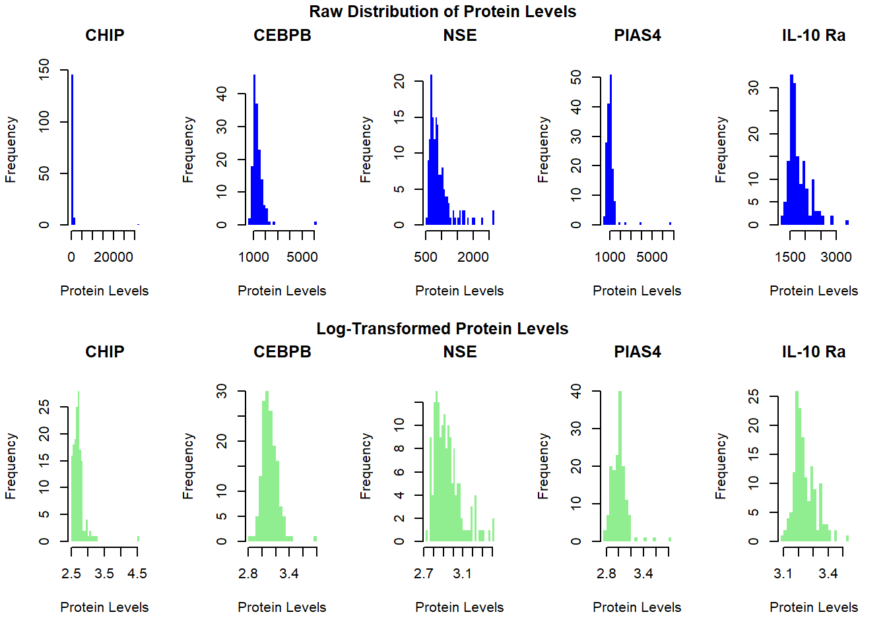
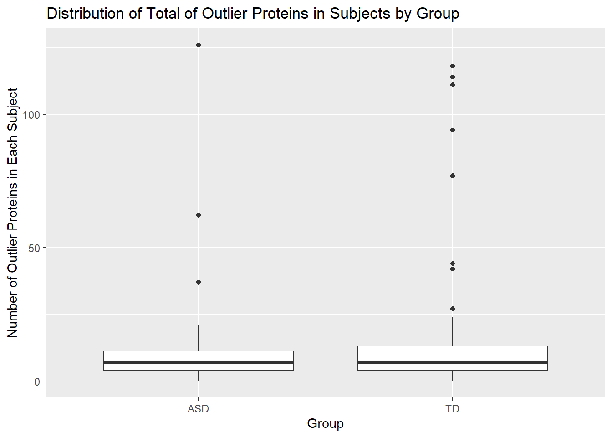
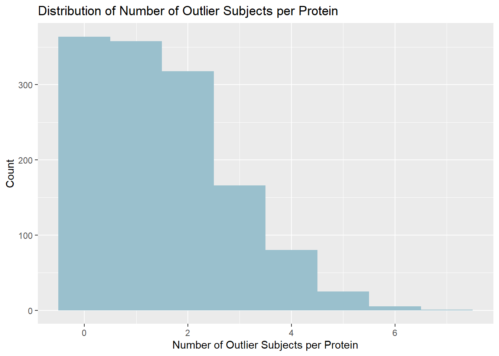
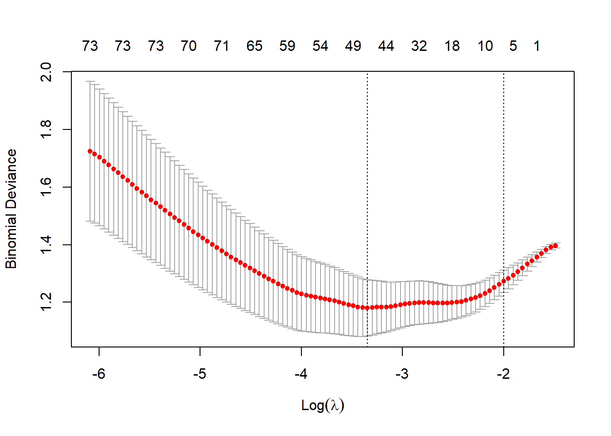

Biomarkers of ASD
Group 11
Use this as a template. Keep the headers and remove all other text. In all, your report can be quite short. When it is complete, render and then push changes to your team repository.
Abstract
Autism spectrum disorder (ASD) is a neurodevelopmental disorder characterized by deficits in social communication and social interaction and restricted, repetitive patterns of behavior, interests, or activities. Our teams goal is to determine a protein panel that will help predict whether a child has ASD, to support diagnosis of the disorder. Our data findings are supported by the research article, “Blood Biomarker Discovery for Autism Spectrum Disorder: A Proteomic Analysis.” We will perform EDA on the data, looking at any outliers and what makes them stand apart. Additionally, we will attempt to modify our methods to find a simplier and more accurate protein panel to predict ASD in patients.
Dataset
The study obtained data from blood samples of individuals with autism spectrum disorder (ASD) and control/typically developing (TD) participants to identify potential early biological markers for ASD. The sample includes 154 male pediatric subjects with 76 subjects in the ASD group and 78 subjects in the TD group, with ages ranging from 18 months to 8 years old. The data was obtained through a fasting blood draw performed on both subject groups. Initially, the assay measured 1,317 proteins in 150μl serum in 154 samples. However, 192 proteins failed to pass quality control and were removed leaving a total of 1,125 proteins to be analyzed. Thus, the dataset comprises 1,125 variables and 154 observations. Preprocessing consisted of log10 and z-transformations to normalize the data as well as clipping any z-transformed values less than -3 and greater than 3 to -3 and 3, respectively to address outliers.
Summary of published analysis
The research goal was to employ proteomic analysis and machine learning to identify a panel of proteins as potential biomarkers for autism spectrum disorder (ASD). The researchers began by measuring protein levels in serum samples from boys with ASD and typically developing (TD) boys, using SomaLogic’s SOMAScan platform to analyze 1,125 proteins in total. To pinpoint proteins that significantly differed between ASD and TD groups and were correlated with ASD severity, they applied three distinct computational methods.
First, they used Random Forest (RF) analysis, an ensemble decision-tree method, which evaluates each protein’s importance by shuffling its values and measuring the effect on model accuracy. They performed 1,000 iterations, averaging the importance values for each protein, and selected the top ten based on these scores. Second, they conducted a t-test analysis, a statistical test to identify proteins with significant level differences between the ASD and TD groups, choosing another ten proteins with the biggest significant differences. Third, they calculated the correlation between each protein’s levels and ASD severity, selecting ten proteins with the highest absolute correlation coefficients.
Across all three methods, five proteins that consistently emerged as significant in each of the 3 methods were identified as core proteins. The researchers further enhanced the predictive accuracy of their model by combining these core proteins with four additional ones selected from the broader set of significant proteins. This final panel of nine proteins achieved a high accuracy, with AUC = 0.86 in classifying ASD, with sensitivity and specificity around 83%.
Core Proteins: MAPK14, IgD, DERM, EPHB2, suPAR
Additional 4 Proteins: ROR1, GI24, elF-4H, ARSB
AUC = 0.860 ± 0.064
Following is the graph of the workflow used in the paper:
Findings
Impact of Preprocessing
Upon initial review of the raw dataset, we noted that it contains NA values and the protein level values were of character type. So before any visualization or modeling we omitted the NA values and converted the protein values to numeric type. In order to understand why preprocessing is important, we compared the original distributions vs. the transformed distributions of the first five proteins from the raw dataset.

The raw protein levels spans a wide range of values, from very low to very high concentrations. This results in a right-skewed distribution where most values are low but a few are extremely high which disproportionately affects the distribution of the data. Therefore, it makes sense to apply a log10 transformation in order to normalize the data, reduce variability, and improve model performance. After transforming, the distributions of the sample proteins are more symmetric and compressed.
Impact of Outliers
After taking the log-transformed data, we counted the number of proteins that exceeded a transformed level of 3, which we would consider an outlier, for each subject in order identify subjects with outlier protein profiles. Below is a boxplot describing the distribution of the number of outlier proteins for each subjects divided between subjects with ASD and subjects considered typically developing(TD).

The group of subjects with ASD had a total of 813 outlier proteins while the typically developing group had larger a total of 1161. The graph shows similar distributions with typically developing subjects having a mean total of 14.88 outlier proteins, and subjects with ASD having a lower mean total of 10.7. Both groups share a median total of proteins per subject of 7.
We also examined the proteins most prone to being outliers:

A total of 722 of the proteins have 0 or 1 outliers across subjects. The proteins with the highest count of outliers across subjects include TLR2 with 7 outlier values, and IL-13, TGM3, GM-CSF, and hnRNP K, and SOD3 each with 6 outlier values.
Methodological variations
The benchmark protein panel was using 4 proteins which resulted in a sensitivity of 0.875 and accuracy of 0.839. Our goal now is to determine alternate methods to extract a comparable panel that can reproduce similar resulting values. First we will partition the data into a training and testing set, using the training data to select the protein panel. Using a t-test and random forest variable importance we extract two different protein panels which we will then determine our final panel by selecting intersecting proteins from both tests. Our result is 4 selected proteins, which when fitted to the testing data returned a sensitivity of 0.769 and accuracy of 0.677. Despite using the same method to derive our protein panel, our panel provides a weaker accuracy of the data. This is most likely due to the variability of a training and testing set. Because we do not have the entire data to find significant proteins, it leaves room for error when finding proteins. The metrics of the fitted model is provided below:
# A tibble: 4 × 3
.metric .estimator .estimate
<chr> <chr> <dbl>
1 sensitivity binary 0.769
2 specificity binary 0.611
3 accuracy binary 0.677
4 roc_auc binary 0.778The next step is to attempt a panel with more proteins. For both the t-test and logistical regression, we selected 25 potentially significant proteins from both to then intersect and find our panel. This method produced us a panel of 13 proteins, with a resulting sensitivity of 0.8125 and accuracy of 0.839, significantly better than our smaller panel of 4 proteins. Our results have improved significantly as we have included additional variables to estimate the result. The additional proteins we employed in testing may still have some significance towards our estimates, hence why it performed better, just because they weren’t significant enough they still have some correlation to the outcome.
# A tibble: 4 × 3
.metric .estimator .estimate
<chr> <chr> <dbl>
1 sensitivity binary 0.812
2 specificity binary 0.867
3 accuracy binary 0.839
4 roc_auc binary 0.946Finally, we will make a panel using the original selection of 10 proteins using t-testing and random forests, but we will employ fuzzy intersection to determine the final panel. The result is a panel of 6 proteins that have a sensitivity of 0.75 and a accuracy of 0.774 after testing on the testing data. Using fuzzy intersection did not improve estimates to the same level of our benchmark, but it still produced pretty impressive accuracy results. Compared to our first panel of 4 proteins the fuzzy intersection had worse sensitivity, but had much more accuracy.
# A tibble: 4 × 3
.metric .estimator .estimate
<chr> <chr> <dbl>
1 sensitivity binary 0.75
2 specificity binary 0.8
3 accuracy binary 0.774
4 roc_auc binary 0.858Improved classifier
Now that we have looked at methodical variations with the way we select our protein panel, we will now attempt to find a panel that has better accuracy than the benchmark panel.
Our first attempt was to use correlation to determine significant proteins. As in the previous section, we will partition the data first to create a training and testing set, and filter the data so we are just looking at participants who have ASD. We then determined the correlation of each variable, selecting the 2 proteins that had the highest absolute value of the correlation. Our resulting accuracy was 0.613 when testing on the testing data, so while this was a simpler panel, its estimates were far from comparable to our benchmark panel.
# A tibble: 1 × 3
.metric .estimator .estimate
<chr> <chr> <dbl>
1 accuracy binary 0.613Our second attempt was using LASSO regression to find our panel. First we tuned and fitted the Lasso model using deviance as our measure. The deviance graph with respect to the lamba value(the threshold) is shown below:

Note that the suggested lambda range is between -2 and -3. However, since the purpose of this method is to create a “simpler” panel with less proteins, we then found a lambda, e^(-1.8), that have a low deviance and allowed for a small protein panel. The result of using this lambda was a panel of 3 proteins, which when tested on the testing set returned an accuracy of 0.871. This result improved upon our benchmark of 0.831 with a smaller panel, so we were successful in finding a simple panel with comparable results.
# A tibble: 1 × 3
.metric .estimator .estimate
<chr> <chr> <dbl>
1 accuracy binary 0.871